Corinne Bouloc, sculptrice sur bois à Pruines
La dentelle de bois, un travail de sculpture ajourée.
Des sculptures fines et ajourées, entièrement réalisées à la main. Chaque pièce est unique, issue d'un travail patient du bois où le chantournage fait dialoguer la matière et le vide, et l'ombre projetée en est le prolongement.
Ou écrivez à contact@tutticolori.fr
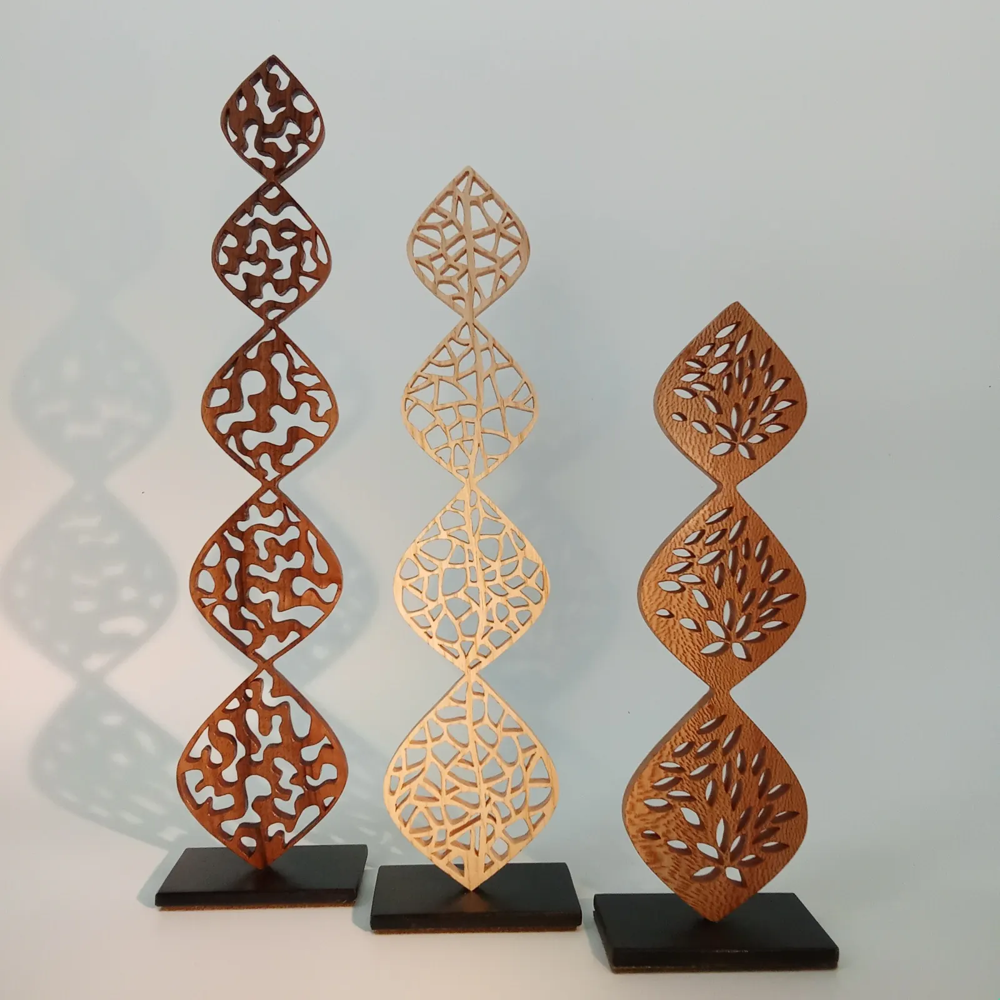
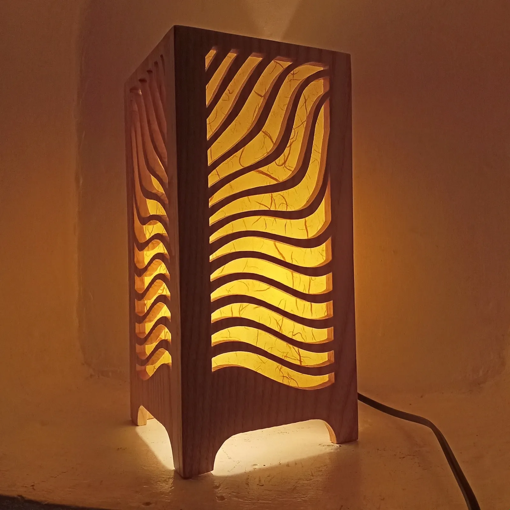
- Pruinesau cœur de la campagne aveyronnaise
- Artisan d'artsculpture sur bois, chantournage
- Route des Métiers d'Artd'Occitanie
- Fabriqué en Aveyronet Fabriqué en Occitanie
- Fait mainpièces uniques et petites séries
Bienvenue à l'atelier Tutti Colori
Je suis Corinne Bouloc, artisan d'art autodidacte. Je crée des sculptures en dentelle de bois et des œuvres façonnées entièrement à la main.
J'ai appris la sculpture sur bois par la pratique, l'observation et la répétition du geste. Le chantournage a d'abord été un loisir, puis un métier, autour d'objets décoratifs, de luminaires et de bijoux. La sculpture est venue presque naturellement.
Après plusieurs années d'activité, la mention artisan d'art, sculpture sur bois et chantournage, est venue confirmer ce chemin et m'a ouvert la Route des Métiers d'Art d'Occitanie. L'atelier est installé à Pruines : un lieu simple et calme, qui influence profondément ma manière de créer.
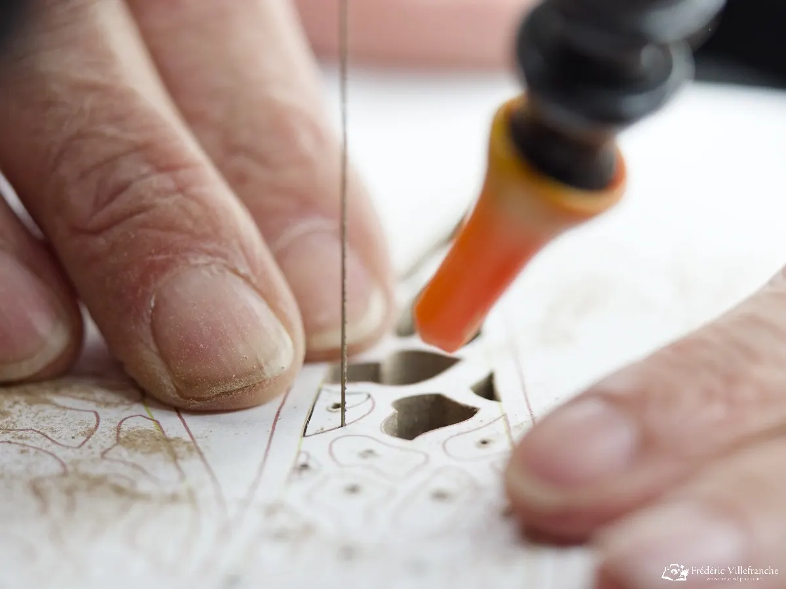
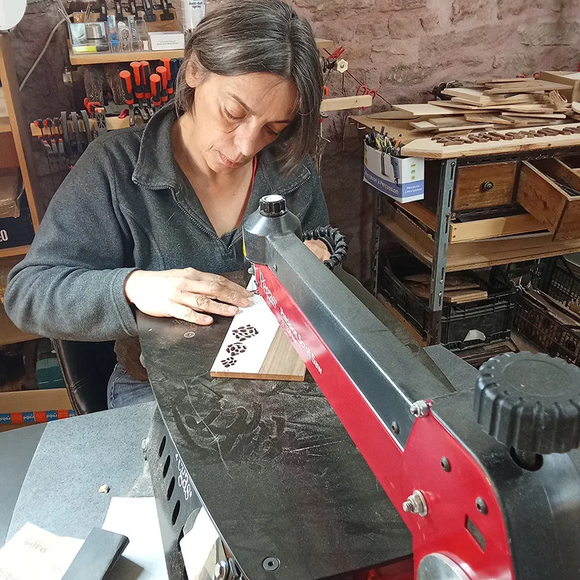
De la planche à la dentelle
Une technique exigeante, qui permet une découpe fine et précise. La découpe n'est qu'une première étape : une grande partie du temps va aux finitions, pour que le toucher soit aussi juste que le regard.
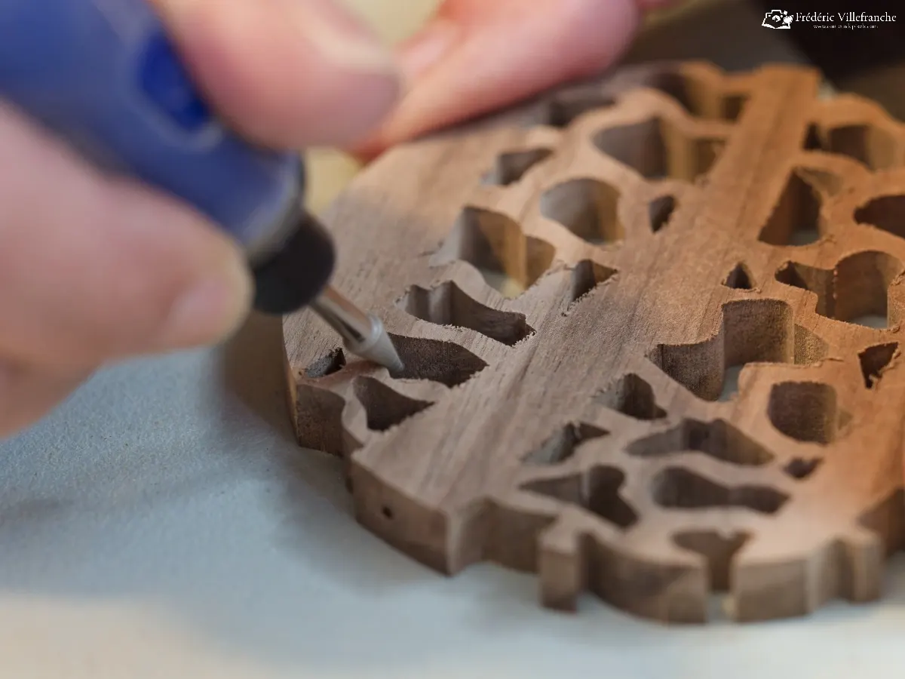
- Le dessinChaque pièce commence par le dessin : l'équilibre des lignes, la respiration des pleins et des vides.
- La découpeLe bois est travaillé à la scie à chantourner.
- Le ponçageLes parties intérieures sont poncées pour effacer toute trace de lame, puis les arêtes adoucies sur les deux faces.
- L'huile, en deux tempsUne couche au pinceau pour atteindre chaque espace ajouré, une seconde en surface pour protéger le bois et révéler ses nuances.
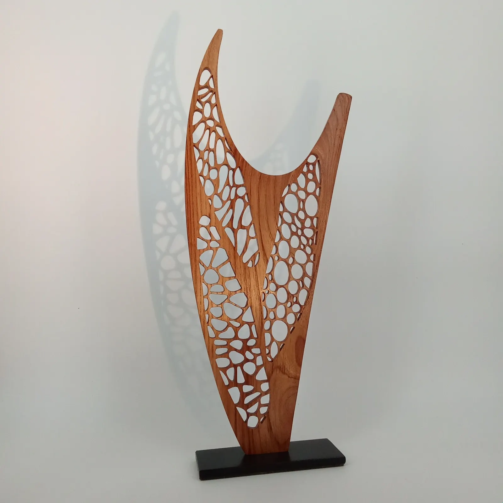
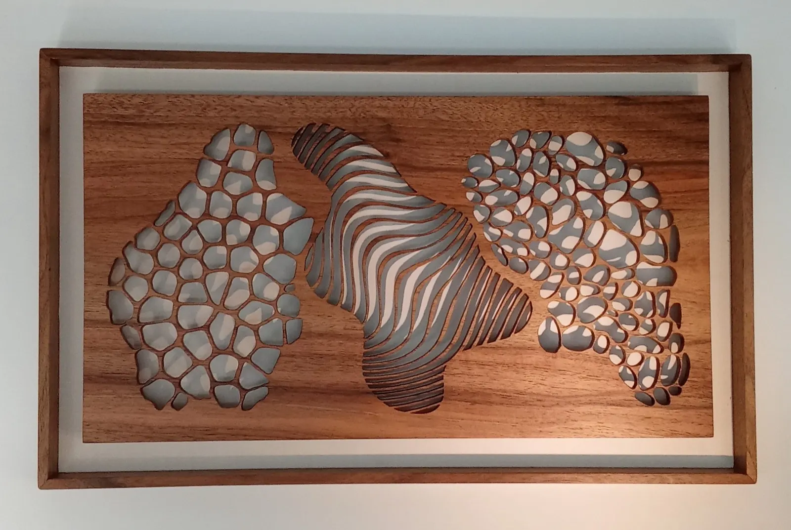
Les sculptures
Des pièces uniques, conçues, découpées et façonnées à la main, qui jouent avec les textures, les formes naturelles et les jeux d'ombre et de lumière.
- MurmuresVoirDes formes libres, présences discrètes, mouvements intérieurs et paysages suggérés.
- Mini ForêtVoirDe petites sculptures qui évoquent la diversité et la singularité des formes d'arbres.
- VibrationsVoirDes formes élancées et ondulantes, le corps traversé par l'émotion, le rythme et l'élan.
- Sculptures muralesVoirPensées comme des tableaux en relief, où la lumière et l'ombre prolongent la sculpture.
Dans la collection Murmures
- Au fond de ton cœurPlatane, orme et noyer, Ø 29 cm1 200 €
- ÉclosionNoyer, 25,5 × 17,5 cm600 €
- CélesteNoyer, Ø 19 cm380 €
- HorizonMerisier, Ø 19 cm1 200 €
Expédition possible, avec une estimation personnalisée sur demande.
La lumière, en traversant la matière, prolonge l'œuvre dans l'ombre qu'elle projette.
Corinne Bouloc
Les créations de l'atelier
Lampes, miroirs, décorations murales ou petits objets sculptés, en petites séries ou en pièces uniques : pour embellir le quotidien ou offrir un cadeau authentique.
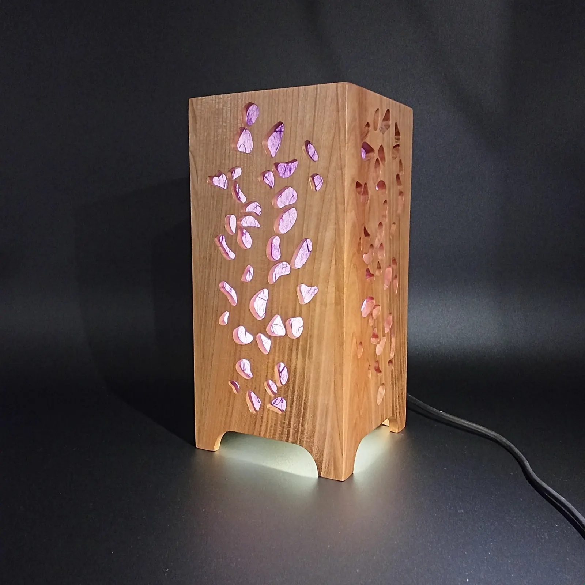
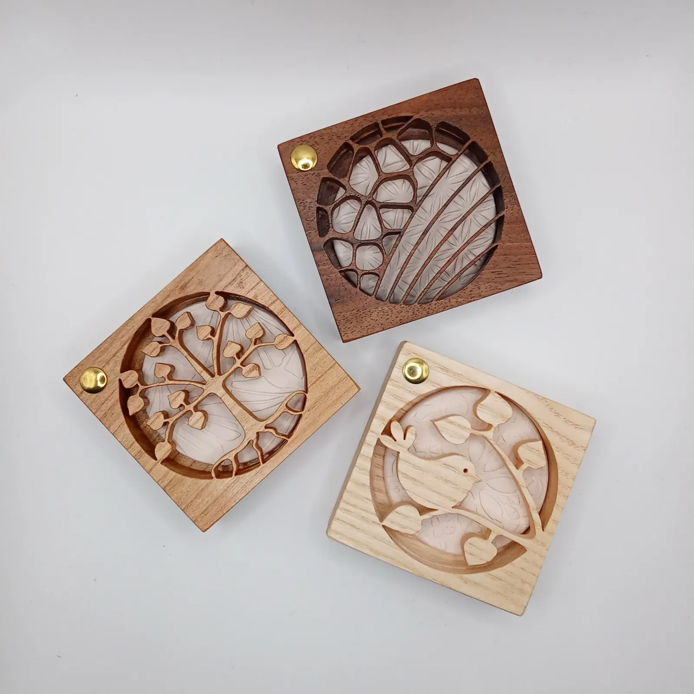
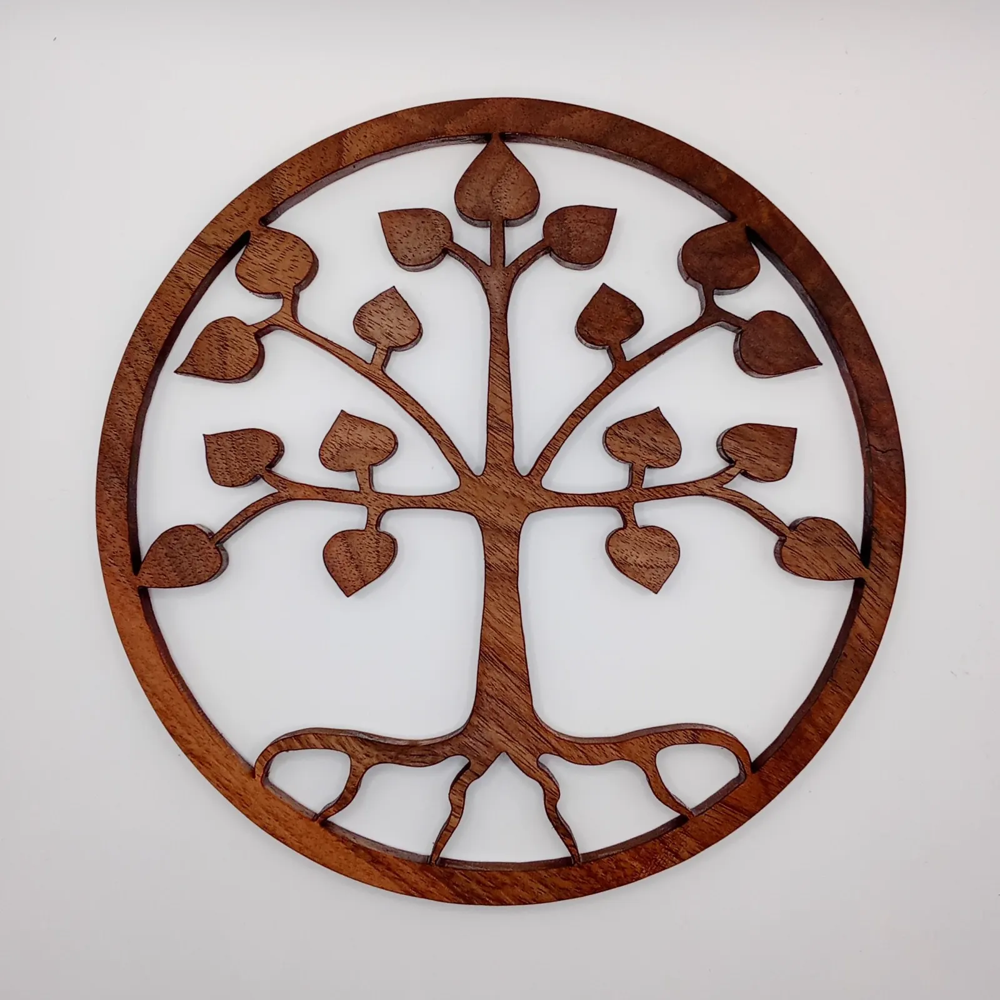
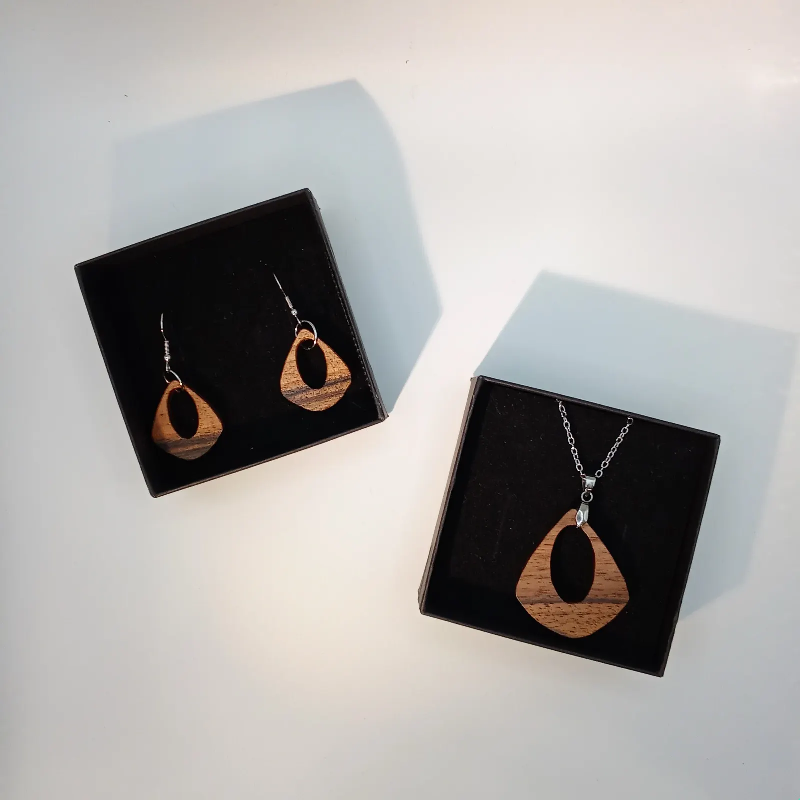
Découvrir la boutique
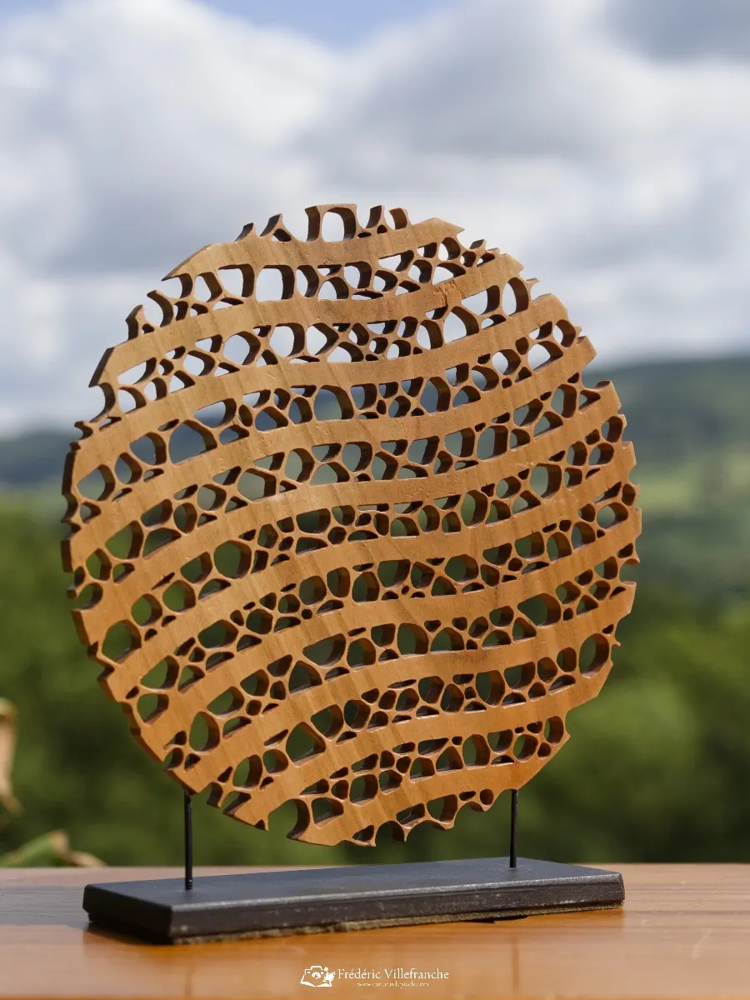
Fabriqué à la main, en Aveyron
Le bois est une matière vivante, travaillée avec respect. Chaque pièce est réalisée entièrement à la main, en pièce unique ou en petite série, avec une attention au temps, à la matière et à l'environnement.
Fabrication artisanale
Conçue et fabriquée à l'atelier Tutti Colori, labellisée Fabriqué en Aveyron et Fabriqué en Occitanie.
Démarche qualité
Un choix attentif des matériaux et des fournisseurs, et un soin particulier apporté aux finitions.
Éco-responsable
Des bois locaux, des matériaux respectueux de l'environnement et des finitions simples et durables.
Rencontrer Corinne
Une sculpture vous intéresse, une lampe, un cadeau ? Appelez ou écrivez pour recevoir toutes les informations. Corinne présente aussi son travail lors d'expositions, de salons de métiers d'art et dans des lieux partenaires.
- L'atelier
- Atelier Tutti Colori
La Gaunhe, 12320 Pruines - Téléphone
- 06 76 42 49 26
- contact@tutticolori.fr
- Suivre l'atelier
- InstagramFacebookFormulaire de contact